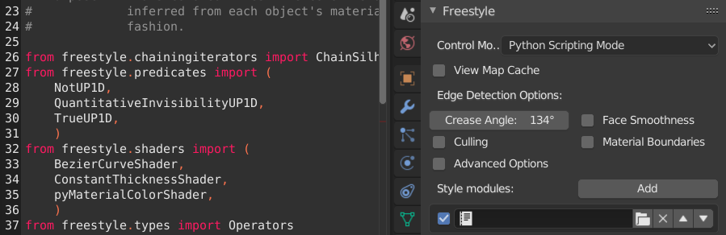
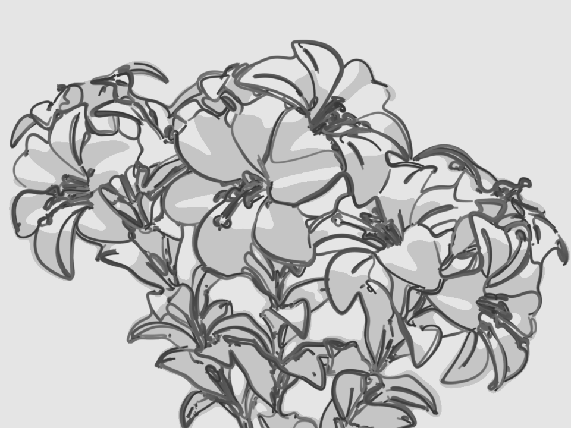

Python Scripting¶
Chế độ Python Scripting cung cấp khả năng tạo nét vẽ dạng đường được lập trình đầy đủ. Trong chế độ điều khiển này, mọi thao tác tạo kiểu đều được viết dưới dạng script Python, được gọi là style module theo thuật ngữ của Freestyle. Đầu vào của một style module là một view map (tức một tập hợp các feature edge được phát hiện), và đầu ra là một tập hợp các stroke đã tạo kiểu.
Một style module được cấu thành từ các lời gọi liên tiếp của năm toán tử cơ bản: selection, chaining, splitting, sorting và stroke creation. Toán tử selection xác định một tập con của các feature edge đầu vào dựa trên một hoặc nhiều điều kiện chọn do người dùng định nghĩa (predicate). Các edge được chọn sẽ được xử lý bởi các toán tử chaining, splitting và sorting để dựng các chuỗi feature edge. Những toán tử này cũng được điều khiển bởi các predicate và hàm do người dùng cung cấp nhằm xác định cách biến đổi các feature edge thành chuỗi. Cuối cùng, các chuỗi được biến đổi thành các stroke đã tạo kiểu bởi toán tử stroke creation, vốn nhận vào một danh sách stroke shader do người dùng định nghĩa.
Các style module Python được lưu trong blend-file dưới dạng text data-block. Các file style module bên ngoài trước tiên cần được tải vào Text Editor. Sau đó, menu chọn trong một entry của style module stack cho phép bạn chọn một module từ danh sách các style module đã tải.

Ảnh chụp màn hình của style module cartoon.py được tải trong Text Editor (trái), cùng các tùy chọn Freestyle ở chế độ Python Scripting trong các nút View Layers (phải).¶
Freestyle cho Blender đi kèm một số style module Python có thể dùng làm điểm khởi đầu cho việc viết style module của riêng bạn. Xem thêm phần Freestyle Python API trong tài liệu tham khảo Blender Python API để biết chi tiết đầy đủ về các cấu trúc của style module.
Tác giả T.K. dùng chế độ Python Scripting (blend-file, CC0).¶ |
 Tác giả T.K. dùng chế độ Python Scripting (blend-file, CC0).¶ |
Viết Style Module¶
Style module là một đoạn code chịu trách nhiệm tạo kiểu cho việc vẽ đường của Freestyle. Đầu vào của style module là một tập hợp feature edge được gọi là view map (ViewMap). Đầu ra là một tập hợp các đường đã tạo kiểu, còn gọi là stroke. Style module được cấu trúc như một pipeline các thao tác cho phép dựng stroke từ các edge đầu vào trong view map.
Có năm loại thao tác (liệt kê kèm hàm toán tử tương ứng):
Selection
Operators.select()Chaining
Operators.chain(), Operators.bidirectional_chain()Splitting
Operators.sequential_split(), Operators.recursive_split()Sorting
Operators.sort()Stroke creation
Operators.create()
View map đầu vào được lấp đầy bằng một tập hợp các đối tượng ViewEdge. Thao tác selection được dùng để chọn lọc các ViewEdge mà nghệ sĩ quan tâm dựa trên các điều kiện chọn do người dùng định nghĩa (predicate). Các thao tác chaining lấy tập con của ViewEdge và dựng Chain bằng cách nối các ViewEdge theo các predicate và hàm do người dùng định nghĩa. Các Chain có thể được tinh chỉnh thêm bằng cách chia chúng thành các phần nhỏ hơn (ví dụ tại các điểm mà edge gấp khúc sắc) và chọn một phần trong số đó (ví dụ chỉ giữ những chuỗi dài hơn một ngưỡng độ dài). Thao tác sorting được dùng để sắp xếp thứ tự chồng lên nhau của các chain nhằm vẽ một đường đè lên một đường khác. Cuối cùng, các chain được biến đổi thành các stroke đã tạo kiểu bởi thao tác stroke creation, vốn áp một chuỗi stroke shader lên từng chain.
ViewEdge, Chain và Stroke được gọi chung là các phần tử một chiều (1D). Một phần tử 1D là một polyline, tức một chuỗi các đoạn thẳng nối tiếp nhau. Đỉnh của các phần tử 1D nói chung được gọi là phần tử 0D.
Tất cả các toán tử đều tác động lên một tập hợp phần tử 1D đang hoạt động. Tập hợp đang hoạt động ban đầu là tập hợp các ViewEdge trong view map đầu vào. Tập hợp đang hoạt động được cập nhật bởi các toán tử.
Selection¶
Toán tử selection đi qua mọi phần tử của tập hợp đang hoạt động và chỉ giữ lại những phần tử thỏa mãn một predicate nhất định. Phương thức Operators.select() nhận vào làm tham số một unary predicate hoạt động trên bất kỳ Interface1D nào đại diện cho một phần tử 1D. Ví dụ:
Operators.select(QuantitativeInvisibilityUP1D(0))
Thao tác selection này dùng predicate QuantitativeInvisibilityUP1D để chỉ chọn các ViewEdge nhìn thấy được (chính xác hơn, là những edge có độ tàng hình định lượng bằng 0). Toán tử selection nhằm áp dụng có chọn lọc kiểu dáng lên một phần của các phần tử 1D đang hoạt động.
Cần lưu ý rằng QuantitativeInvisibilityUP1D là một class triển khai predicate kiểm tra độ nhìn thấy của đường, và phương thức Operators.select() nhận một instance của class predicate đó làm tham số. Việc kiểm tra predicate cho một phần tử 1D cho trước thực chất được thực hiện bằng cách gọi instance của predicate, tức là gọi phương thức __call__ của class predicate. Nói cách khác, phương thức Operators.select() nhận làm tham số một functor, mà functor này lại nhận một đối tượng Interface0D làm tham số. Freestyle Python API sử dụng functor rộng rãi để triển khai các predicate cũng như các hàm.
Chaining¶
Các toán tử chaining tác động lên tập hợp các đối tượng ViewEdge đang hoạt động và xác định topology của các stroke trong tương lai. Ý tưởng là triển khai một iterator để duyệt đồ thị ViewMap bằng cách đi dọc theo các ViewEdge. Iterator định nghĩa một quy tắc chaining xác định ViewEdge tiếp theo sẽ đi theo tại một đỉnh cho trước (xem ViewEdgeIterator). Một số iterator như vậy được cung cấp sẵn trong Freestyle Python API (xem ChainPredicateIterator và ChainSilhouetteIterator). Có thể định nghĩa iterator tùy chỉnh bằng cách kế thừa class ViewEdgeIterator. Toán tử chaining còn nhận làm tham số một UnaryPredicate hoạt động trên Interface1D làm tiêu chí dừng. Quá trình chaining dừng lại khi iterator đã đi đến một ViewEdge thỏa mãn predicate này trong lúc duyệt đồ thị.
Chaining có thể là một chiều Operators.chain() hoặc hai chiều Operators.bidirectional_chain(). Trong trường hợp sau, chaining sẽ lan truyền theo hai hướng từ edge khởi đầu.
Sau đây là một ví dụ code về chaining hai chiều:
Operators.bidirectional_chain(
ChainSilhouetteIterator(),
NotUP1D(QuantitativeInvisibilityUP1D(0)),
)
Toán tử chaining dùng ChainSilhouetteIterator làm quy tắc chaining và dừng chaining ngay khi iterator đi đến một ViewEdge không nhìn thấy được.
Các toán tử chaining xử lý tập hợp các đối tượng ViewEdge đang hoạt động theo thứ tự. Các ViewEdge đang hoạt động có thể được sắp xếp trước bằng phương thức Operators.sort() (xem bên dưới). Nó bắt đầu một chain với ViewEdge đầu tiên của tập hợp đang hoạt động. Mọi ViewEdge đã từng tham gia vào quá trình chaining đều được đánh dấu (trong ví dụ trên, time stamp của mỗi ViewEdge được sửa đổi theo mặc định), để không xử lý cùng một ViewEdge hai lần. Khi chaining đi đến một ViewEdge thỏa mãn predicate dừng, chain kết thúc. Sau đó một chain mới được bắt đầu từ ViewEdge chưa đánh dấu đầu tiên trong tập hợp đang hoạt động. Thao tác này được lặp lại cho đến khi ViewEdge chưa đánh dấu cuối cùng của tập hợp đang hoạt động được xử lý xong. Ở cuối thao tác chaining, tập hợp đang hoạt động được đặt thành các Chain vừa được dựng.
Splitting¶
Thao tác splitting được dùng để tinh chỉnh topology của từng Chain. Splitting được thực hiện theo kiểu tuần tự hoặc đệ quy. Ở dạng cơ bản, sequential splitting Operators.sequentialSplit() rà qua Chain với một độ phân giải tùy ý cho trước và đánh giá một unary predicate (hoạt động trên phần tử 0D) tại mỗi điểm dọc theo Chain. Mỗi khi predicate được thỏa mãn, chain bị tách thành hai chain. Ở cuối thao tác sequential split, tập hợp chain đang hoạt động được đặt thành các chain mới.
Operators.sequentialSplit(TrueUP0D(), 2)
Trong ví dụ này, chain bị tách mỗi 2 đơn vị. Một phiên bản tinh vi hơn dùng hai predicate thay vì một: một cái xác định điểm bắt đầu của chain mới và cái kia xác định điểm kết thúc của nó. Phiên bản thứ hai này có thể tạo ra một tập Chain rời rạc hoặc chồng lấn nếu hai predicate khác nhau (xem Operators.sequentialSplit() để biết thêm chi tiết).
Recursive splitting Operators.recursiveSplit() đánh giá một hàm trên các phần tử 0D dọc theo Chain với một độ phân giải cho trước và tìm điểm cho giá trị lớn nhất của hàm. Chain sau đó bị tách thành hai tại điểm đó. Quá trình này được lặp lại đệ quy trên từng Chain mới trong hai chain, cho đến khi Chain đầu vào thỏa mãn điều kiện dừng do người dùng chỉ định.
func = Curvature2DAngleF0D()
Operators.recursive_split(func, NotUP1D(HigherLengthUP1D(5)), 5)
Trong ví dụ code ở trên, các Chain được tách đệ quy tại các điểm có độ cong 2D cao nhất. Độ cong được đánh giá tại các điểm dọc theo Chain với độ phân giải 5 đơn vị. Chain ngắn hơn 5 đơn vị sẽ không còn bị tách nữa.
Sorting¶
Toán tử sorting Operators.sort() sắp xếp thứ tự chồng lên nhau của các phần tử 1D đang hoạt động. Nó nhận làm tham số một binary predicate được dùng như toán tử "nhỏ hơn" để sắp thứ tự hai phần tử 1D.
Operators.sort(Length2DBP1D())
Trong ví dụ code này, việc sắp xếp dùng binary predicate Length2DBP1D để sắp xếp các đối tượng Interface1D theo thứ tự tăng dần về độ dài 2D.
Việc sắp thứ tự đặc biệt hữu ích khi kết hợp với causal density. Thật vậy, causal density đánh giá mật độ của ảnh kết quả trong lúc ảnh đang được chỉnh sửa. Nếu muốn dùng một công cụ như vậy để quyết định loại bỏ stroke mỗi khi mật độ cục bộ quá cao, việc kiểm soát thứ tự vẽ các stroke là điều quan trọng. Trong trường hợp này, ta sẽ dùng toán tử sorting để bảo đảm các đường "quan trọng" nhất được vẽ trước.
Stroke Creation¶
Cuối cùng, toán tử stroke creation Operators.create() nhận tập hợp Chain đang hoạt động làm đầu vào và dựng các Stroke. Toán tử nhận hai tham số. Thứ nhất là một unary predicate hoạt động trên Interface1D, được thiết kế để thực hiện lựa chọn cuối cùng trên tập hợp chain. Một Chain không thỏa mãn điều kiện sẽ không tạo ra Stroke. Đầu vào thứ hai là một danh sách shader sẽ chịu trách nhiệm shading cho từng stroke được dựng.
shaders_list = [
SamplingShader(5.0),
ConstantThicknessShader(2),
ConstantColorShader(0.2,0.2,0.2,1),
]
Operators.create(DensityUP1D(8,0.1, IntegrationType.MEAN), shaders_list)
Trong ví dụ này, predicate DensityUP1D được dùng để loại bỏ tất cả các Chain có mật độ trung bình cao hơn 0.1. Mỗi chain được biến đổi thành một stroke bằng cách resample để có một điểm mỗi 5 đơn vị, đồng thời gán cho nó độ dày không đổi 2 đơn vị và màu xám đậm không đổi.
Điều Khiển của Người dùng lên Định nghĩa Pipeline¶
Việc viết style module cung cấp nhiều loại điều khiển khác nhau cho người dùng, mặc dù từng style module riêng lẻ có cấu trúc pipeline cố định. Một là việc sắp xếp trình tự của các cấu trúc điều khiển pipeline khác nhau, hai là thông qua việc định nghĩa các đối tượng functor được truyền làm tham số dọc suốt pipeline.
Các cấu trúc điều khiển pipeline khác nhau có thể được định nghĩa bằng cách sắp xếp trình tự các thao tác selection, chaining, splitting và sorting. Stroke creation luôn là thao tác cuối cùng kết thúc một style module.
Predicate, hàm, chaining iterator và stroke shader có thể được định nghĩa bằng cách kế thừa các class cơ sở và ghi đè các phương thức phù hợp. Xem các mục trong tài liệu tham khảo của các class cơ sở sau để biết thêm thông tin về các cấu trúc cho phép người dùng script hóa.
Xem thêm
Predicate, hàm, chaining iterator và stroke shader có thể được định nghĩa bằng cách kế thừa các class cơ sở và ghi đè các phương thức phù hợp. Xem module Python Freestyle để biết thêm thông tin về các cấu trúc cho phép người dùng script hóa.